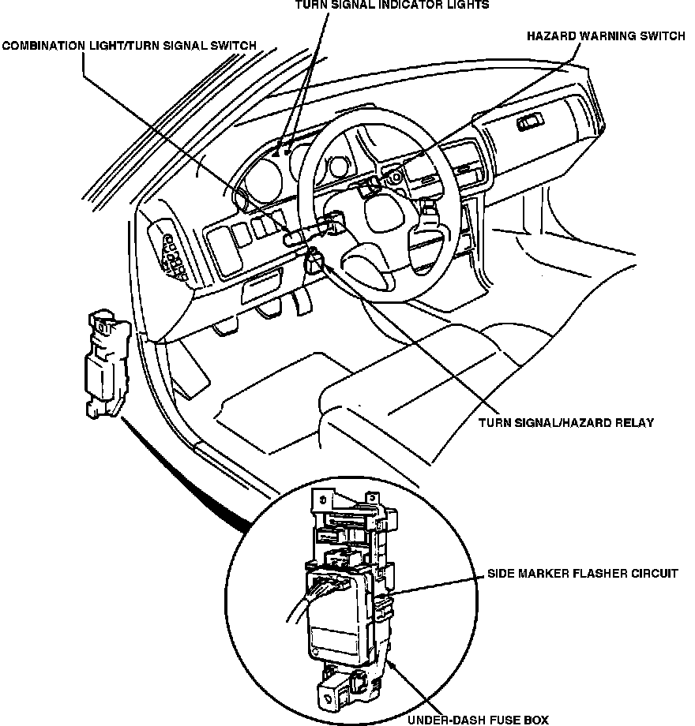

Operation CHARM
: Car repair manuals for everyone.
Home
>>
Acura
>>
1991
>>
Integra L4-1834cc 1.8L DOHC FI
>>
Repair and Diagnosis
>>
Relays and Modules
>>
Relays and Modules - Lighting and Horns
>>
Turn Signal Relay
>>
Locations
Turn Signal Relay: Locations
LH Instrument Panel Relays & Control Units:
Exterior Lighting Components:

Behind LH Side Of I/P, Near Steering Column